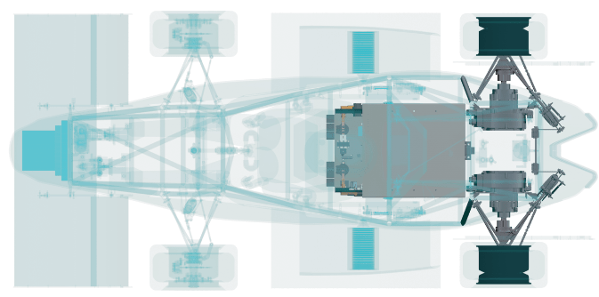
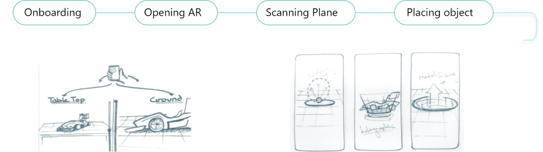
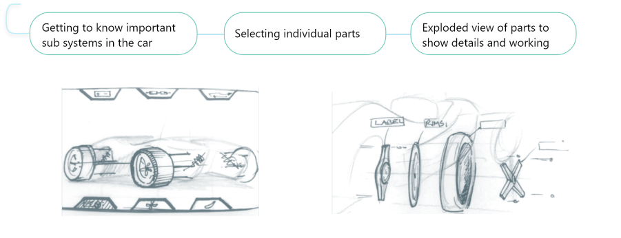

AR.CAR
Interaction design for Augmented Reality
MAY 2020 | AR design Interaction design Unity prototyping
Note: The car itself has been designed and modelled by DEs and JDEs at the IITB Racing team and has only been textured and rendered by me. This project deals with exploring the car in AR and not the design of the car itself.
Background: Mentorship Project
Under the mentorship of an AR designer at Google, The project was done in a duration of six weeks from competitor analysis, problem identification, prototyping to suggesting scalable guidlines. In the times of COVID 19, testing was done through convenience sampling on relatives (emergent AR users).
About Augmented Reality
Augmented Reality (AR) is about placing virtual objects in the real world that could be manipulated in real time through an interface. AR has had me fascinated with the immersive experience and the interface that goes beyond the 2D screen, towards tangibile interactions and real life metaphors.
Goals: Designing for, not with AR
Through this project, the main aim was to learn about the interaction design problems in AR and explore solutions to them. Learning to prototype for AR and understanding the design process for it was another important learning goal.
Solving usability problems in AR
Storytelling (of how stuff works) in AR
Learning prototyping techniques for AR
Topic: “How Stuff Works?”
The topic given was to tell the story of “ How Stuff Works”, through the medium of AR. For the scope of this project, I explain how an electric racing car works using handheld AR devices eg, phone/ ipad.

Introducing and familiarizing with the car in your world
highlighting main components and their working
The Role of AR in all this?
There are countless AR apps and it has become somewhat a cool thing. We wonder if it is even required in some cases or will just a 3D representation on a 2D screen suffice? Why have the object in your real environment and use a lot of processing power and battery?
Understanding scale
Seeing a full scale car in your own world creates an authentic experience.
3D spatial relations
Better understanding of the spatial relations as the car is in your own frame of reference.
Active exploration
User becomes an explorer, actively interacting with the car from their own point of view.
Critical User Journey

Building expectations and help the user to anticipte the context of use eg. scale
Naturally introduce the virtual object in the real world and help user position it

Menu on screen space vs on world space. How to display text in AR?
How to know what is clickable? pointing at and selecting the parts.
Designing Scenes not just Screens
Paper prototypes were made, not as just screens but storyboard of how the car should be shown through the screens. I had to decide the elements in screen space and the one in 3D world space.
I used these frames with sketched buttons to test with people. This was to check if they are able to navigate through parts and understand the structure of the car.
Screen Elements Reduce Immersion
It is difficult to switch focus from 2D screen space to 3D space. As the paper could not bring out the 3D aspect of AR, users mostly interacted with the buttons permanently on screen and had no knowledge of being able to interact with the parts themselves due to lack of clicking affordance in the objects.

Screen space of the side view mirror
In a side view mirror, the text is in the screen space and focusing on that makes us ignore the car that are inside the reflected 3D world.

World space of the side view mirror
The cars are in the world space which goes beyond the surface of the morror and focusing on the car makes us totally ignore the text.
Early Working Prototyping: Testing 3D
Some insights could be drawn from these paper prototypes about how people could interact with screen space elements and whether they could navigate through the different parts of the car. However, to get any deeper insights about how people could interact with AR elements, I had to jump into making quick working prototypes.
Identifying Key Problems from Testing
During the time of lockdown due to COVID19, I asked my parents to use the application. I could get some useful insights as they were not familiar with AR. It made me think from someone’s perspective who doesn’t even have a conceptual model for AR in their mind.
And after looking at several reviews and feedback on existing apps online, I found out that there are many such people. I had to make several iterations of the app just for the placing the car in the environment and visit back to the journey map to document more specific problems.
Placing large scale objects
Realization text as menu items
What is clickable and how to select?
What is Clickabke and How?
As observed in the rudimentary testing, the users were not aware if the 3D objects in the world space could be interacted with and what could happen if they tapped on them. The use case for this in our project was where users should click on a part to know more about it or in some cases, view in exploded view.
Apart from the affordance, it is difficult to control objects in a 3D space using a 2D screen. The position of the objects are not fixed with reference to the screen and accidental taps on screen can lead to errors.
Point and shoot metaphor could be used especially in the case of multiple objects with different functions.
Point and Shoot vs Tap and Drag
To test and compare the point and shoot metaphor and tap and drag, I used the existing working prototypes that were made for placing the objects. I reduced the scale of the car so that the previous problem doesnt interfere with our findings and we can test the interactions for selection itself.
Tapping to place the car and then selecting and dragging to position
-Added a move icon at the base with a blue glow to indicate the affordance of selecting and moving on the plane
-The users were still not sure if they could select and move the object as dragging on the 2D surface and moving the model in 3D was confusing.
Pointing and deciding the position of the object and then tapping to place
-Connection to real world was easy to understand as users move the phone in the 3d world itself to point and position
-The placement indicator creates an anticipation of what is going to happen. The placement of the object this way was faster than the previous.
Point and Shoot for Selection: Insights
-Point and shoot is better for the understanding of 3D world
-Pointers can be used for a hover effect to create anticipation
-Accidental taps need to be prevented
Hovering and Selecting with Raycast Reticle

-User clicks the red icon on the right to enable reticle
-The user then points the reticle to a part like the battery
-The battery then explodes partially to signify its affordsance
-The user may finally tap anywhere to view battery in exploded view
...

 Resume
Resume